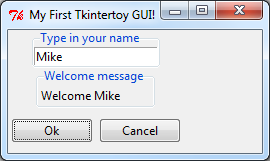
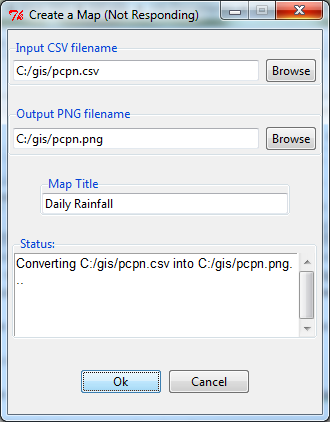
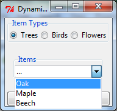

Tkintertoy Tutorial¶
Date: Dec 29, 2017 Author: Mike Callahan
Introduction¶
Tkintertoy grew out of a GIS Python (mapping) class I taught at a local college. My students knew GIS but when it came time to put the workflows into a standalone application, they were stumped with the complexity of programming a GUI, even a simple one like Tkinter. So I developed an easy to use GUI library that made it much simpler for their applications. This was posted on PIPY as EzDialog. Over the last several months I took some of the original ideas in EzDialog and developed Tkintertoy, which is even easier to use, but more powerful as well.
Tkintertoy creates Windows which contain widgets. Almost every tk or ttk
widget is supported and a few combined widgets are included. Most widgets
are contained in a Frame which can act as a label to the user. The widgets
are referenced by string tags which are used to access the widget, its
contents, and its containing Frame. All this information is in the content
directory of the Window.
The early (by early I mean experience, not age) programmer does not need to be concerned with details of creating and assigning a tk/ttk widget, while a more advanced programmer can access all the tk/ttk options of the widgets. Tkintertoy makes sure that all aspects of tk/ttk are exposed if the programmer needs them.
It is hoped that an instructor teaching desktop Python will take advantage of Tkintertoy and quickly move their students from boring command-line interfaces. GUI programming can be fun, which puts the “toy” in Tkintertoy.
A “Hello World” Example¶
Let’s look at a bare bones example of a complete GUI. This GUI will ask for the user’s name and use it in a welcome message:
Here is a screen shot of the resulting GUI:

Here is an explanation of what each line does:
- Import the
Windowcode which is the foundation of Tkintertoy. It will initialize Tk, create a Toplevel window, create a Frame, and create acontentdirectory which will hold all the widgets. - Create an instance of a
Windowobject assigned togui. - Change the title of
guito “My First Tkintertoy GUI!”. If you don’t do this, the title of theWindowwill default to “Tk”. If you want no title make the second argument ‘’ or None. - Add an ttentry widget to
gui. We are going to tag it with ‘name’ since that is what we are going to collect there. However, the tag can be any string. The title of the Frame surrounding the Entry widget will be ‘Type in your name’. Entry frame titles are a great place to put instructions to your user. If you don’t want a title, just leave off this argument. The default width of the Entry widget is 20 characters, but this, like many other options can be overridden. - Add a ttlabel widget to
gui. This tag will be ‘welcome’ since this is where the welcome message will appear. Labels are a good widget for one line information to appear. - Add a ttbuttonbox row. It defaults to two buttons, ‘Ok’ and ‘Cancel’.
The default action is when the user click on ‘Ok’ the GUI processing loop is
exited. However, if the user clicks on ‘Cancel’, the loop is exited and the
contentdirectory is deleted. Of course, the button labels and these actions can be easily modified by the programmer. - Place the name widget at row 0 of
guicentered. Therow=0parameter could have been left off since it is the default. Theplot()method is really a synonym for the tkgrid()method. All arguments togrid()can be used inplot(). Plot was selected as a better word for a beginner. Until a widget is plotted, it will not appear. Theguiwindow is automatically plotted. - Place the welcome widget at row 1 of
guicentered. There is a 3 pixel default vertical spacing between the Label widget and Entry widget. - Place the command bar at row 2 of
guicentered with a vertical spacing of 10 pixels. - Begin an infinite loop.
- Wait for the user to press click on a button. The
waitforUser()method is a synonym for the tkmainloop()method. Again, the name was changed to help a beginning programmer. This method starts the GUI processing loop and is the heart of all GUIs. It handles all key presses and mouse clicks. Nothing will happen until this method is running. - Test to see if the
contentsdirectory exists. If it does, the user clicked on the ‘Ok’ button. Otherwise, the user clicked on the ‘Cancel’ button. This line of code will not be reached until the user clicks on a button. - Since the user clicked on the ‘Ok’ button, collect the contents of the
name widget and place it with the welcome message into the welcome widget.
This shows how easy it is to get and set the contents of a widget using the given
methods. Also, since all widgets are contained in the
contentdirectory ofgui, the programmer does not need to keep track of individual widgets, only their containing frames or windows. - This line of code is reached only if the user clicked on ‘Cancel’ which
deleted the
contentdirectory. In this case, the user is finished with the program. - Break the infinite loop and exit the program. Notice the difference
between the program loop set up by the
whilestatement and the GUI processing loop set up by thewaitforUser()method.
So you can see, with 15 lines of code, Tkintertoy gives you a complete GUI driven application, which will run on any platform Tkinter runs on with little concern of the particular host. Most Tkintertoy code is cross platform.
Simple Map Creation Dialog¶
Below is the code to create a simple dialog window which might be useful for a GIS tool which creates a map. This example was not written in an object-oriented style in order to help the typical GIS script or early Python script writer. Object-oriented style will be demonstrated later. We will need the filename of the input CSV file, the output PNG map image, and the title for the map. We will use an Open filename widget, a Save As filename widget, and an Entry widget, and a Message widget as a status window.
We want the layout for the dialog to look like this:

Here is the code (we will not worry not the code that actually creates the map!):
Each line of code is explained below:
- Import the
Windowobject from tkintertoy. - Create an instance of a
Windowand label itgui. - Set the title
guito “Create a Map”. - We want to limit the input files to .csv only. This is how you do that. Notice, you can filter multiple types.
- Add an ttopen box widget, with a 40 character wide ttentry widget, filtering only CSV files.
- We want to limit our output to .png only.
- Add a ttsavea box widget, with a 40 character wide ttentry widget, filtering only PNG files. If the file already exists, an overwrite confirmation window will pop up.
- Add an ttentry widget that is 40 characters wide to collect the map title.
- Add a tttext widget, with a width of 40 characters, a height of 5 lines, which will be used for all status messages.
- Add a ttbuttonbox with the default ‘Ok’ and ‘Cancel’ buttons.
- Plot the input widget in the first row, vertically separating widgets by 10 pixels.
- Plot the output widget in the second row, vertically separating widgets by 10 pixels.
- Plot the title widget in the third row, vertically separating widgets by 10 pixels.
- Plot the status widget in the fourth row, vertically separating widgets by 10 pixels.
- Plot the command widget in the fifth row, vertically separating widgets by 20 pixels.
- Enter the GUI processing loop and exit when the user clicks on a button.
- If the user clicked on the OK button do the following:
- Create the status message.
- Display the status message.
- Import the time module
- Pretend we are making a map but in reality just pause for 5 seconds so the user can see the status message.
- This is where the actual map making code would begin.
- Exit the program.
Dynamic Widgets¶
A very useful technique is to create a widget which is dependent on the contents of another widget. The code below shows a combobox which is dependent on a radio button row. The trick is to create a combobox widget and then create a callback function which looks at the contents of the radio button row and then sets the values attribute of the combo widget. Again, we will avoid an object-oriented approach in order not to confuse the early script writer. However, you will see later that an object-oriented approach will eliminate some strange looking code.
Here is the screenshot:

The callback function will have to know the widget that called it which is included when the Window is passes as an argument. This complexity can be eliminated by writing in an object-oriented fashion, which will be covered in the following section.
Below is the code:
Below explains every line:
- Import
Windowfrom tkintertoy. - Blank lines improve code readability.
- Define the callback function. It will have a single parameter, the calling
Window. - This is the function documentation string.
- These next three lines define the lookup dictionary.
- Same as above.
- Same as above.
- Get the category the user clicked on.
- Using this category as a key, set all the values in the ttcombobox widget list
to the list returned by the lookup dictionary, rather than the ttentry widget,
which is why the
SetValuesoption is used. - Blank lines improve code readability.
- Create the three categories.
- Create an instance of
Windowassigned togui. - Set the title for
gui. - Add a ttradiobutton box using the categories.
- Add a ttcombobox widget which will update its values list whenever the user
clicks on a Radio button. This is an example of using the
postcommandoption for the ttcombobox widget. Normally,postcommandwould be assigned to a single method or function name. However, we need to includeguias an parameter. This is whylambdais there. Do not fearlambda. Just think of it as a specialdefcommand that defines a function in place. - Add a ttbuttonbox with the default ‘Ok’ and ‘Cancel’ buttons.
- Initialize the category widget.
- Initialize the items widget.
- Plot the category widget in the first row.
- Plot the items widget in the second row.
- Plot the command buttons in the third row.
- Start the GUI processing loop and wait for the user to click on a button.
- Check to see if the user clicked on Ok by seeing if content is not None.
- Retrieve the value of each widget using the get method.
- Same as above.
- This where the actual processing code would start.
- Exit the program.
Object-Oriented Dynamic Widgets¶
While I told you to not fear lambda, if you write code in an object-oriented mode, you don’t have to be concerned about lambda. While, the details of writing object-oriented code is far beyond the scope of this tutorial, we will look at the previous example in an object-oriented style using composition. You will see, it is not really complicated at all, just a little different.
Below is the new code:
And the explanations:
- Import
Windowfrom tkintertoy. - Blank lines improve code readability.
- Create a class called
Gui. This will contain all the code dealing with the interface. - This is a class documentation string.
- Blank lines improve code readability.
- Create an initialize method that will create the interface. All methods in the
class will have access to
self. - This is the method documentation string.
- Create the three categories.
- Create an instance of
Windowassigned toself.gui. This means that all methods in the class will be able to access theWindowthroughself.gui. - Set the title for
self.gui. - Add a ttradiobutton box using the categories.
- Add a ttcombobox widget which will update its values list whenever the user
clicks on a Radio button. Notice that the
postcommandoption now simply points to the callback method withoutlambdasince ALL methods can accessself.gui. This is the major advantage to object-oriented code. - Add a ttbuttonbox with the default ‘Ok’ and ‘Cancel’ buttons.
- Initialize the category widget.
- Initialize the items widget.
- Plot the category widget in the first row.
- Plot the items widget in the second row.
- Plot the command buttons in the third row.
- Blank lines improve code readability.
- Create the callback method using the
selfparameter. - This is the method documentation string.
- These next three lines define the lookup dictionary.
- Same as above.
- Same as above.
- Get the category the user clicked on.
- Using this category as a key, set all the values in the ttcombobox widget list
to the list returned by the lookup dictionary, rather than the ttentry widget,
which is why the
SetValuesoption is used. - Blank lines improve code readability.
- Create an instance of the
Guiclass labeledapp. Notice thatapp.guiwill refer to theWindowcreated in the__init__method andapp.gui.contentwill have the contents of the window. - Start the gui processing loop and wait for the user to click on a button.
- Check to see if the user clicked on Ok by seeing if content is not None.
- Retrieve the value of each widget using the get method.
- Same as above.
- This where the actual processing code would start.
- Exit the program.
There are very good reasons for learning this style of programming. It should be used for all except the simplest code.
Using the Collector Widget¶
This next example is the interface to a tornado path generator. Image that we have a database that has tornado paths stored by date, counties that the tornado moved through, and the maximum damaged caused by the tornado (called the Enhanced Fajita or EF scale).
This will demonstrate the use of the collector widget, which acts as a dialog inside a dialog. Below is the screenshot:
..image:: images/tornado.png
You can see for the date we will use a ttspinbox, the county will be a ttcombobox widget``, the damage will use ttcheckbutton row, and all choices will be shown in the ttcollector widget. Here is the code:
Here are the explanations, notice the first steps are very similar to the previous example:
- Import
Windowfrom tkintertoy. - Blank lines improve code readability.
- Create a class called
Gui. This will contain all the code dealing with the interface. - This is a class documentation string.
- Blank lines improve code readability.
- Create an initialize method that will create the interface. All methods in the
class will have access to
self. In this case there are no other methods so theselfis unnecessary but it does no harm and is a good habit to develop. - This is the method documentation string.
- Create a list of county names.
- Same as above.
- Create a list of damage levels.
- Create the parameter list for the date spinner. The first digit is the width, the second is the lower limit, the third is the upper limit.
- The initial date will be 1/1/1980.
- Set up the column headers for the Collector widget. The first value is the the header string, the second is the width of the column in pixels.
- Create an instance of
Windowlabeledself.gui. Again, theselfmeans that every method in the class will have access. - Set the title of
self.guito “Tornado Path Generator”. - Add a date ttspinbox.
- Set the date to the default.
- Add a county ttcombobox.
- Add a damage level ttcheckbutton box.
- Add a ttcollector.
- Add a command ttbuttonbox.
- Plot the date widget in the first row, separating the widgets by 5 pixels.
- Plot the county widget in the second row, separating the widgets by 5 pixels.
- Plot the damage level widget in the third row, separating the widgets by 5 pixels.
- Plot the path widget in the fourth row, separating the widgets by 5 pixels.
- Plot the command widget in the fifth row, separating the widgets by 10 pixels.
- Blank lines improve code readability.
- Create a
main()function. This is the way most Python scripts work. - This is the function documentation.
- Blank lines improve code readability.
- Create an instance of the
Guiclass which will create the GUI. - Wait for the user to click a button.
- Collect all the values in the collector.
- This is where the tornado path generation code would begin.
- Blank lines improve code readability.
- Run the driving function.
Using the Notebook Container¶
Tkintertoy includes containers which are Windows within Windows in order to organize widgets. A very useful one is the ttnotebook. This example shows a notebook that combines two different map making methods into a single GUI.
Below is a screenshot:
..image:: images/mapper.png
Here is the code. We will also demonstrate more dynamic widgets and introduce some simple error trapping: